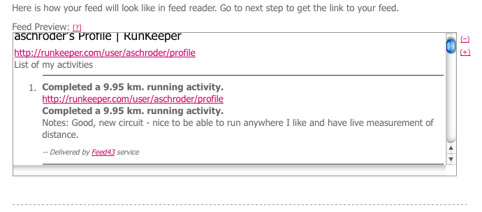

I’ve started using RunKeeper since getting a GPS tracker for my running. I wanted an RSS feed along with plenty of others, so here’s a really trashy little hack to get one, until the good folks at Runkeeper make one for you.
This requires a free service called Feed43 – it’s just the first such html to rss service I found, so it may not be the best, I’d be open to suggestions of better ones. I thought it made the sometimes annoying process of scraping HTML quite painless.
Here’s the steps and simple regex’s I used to grab out my actvities:
Step One
Enter your profile URL, mine is http://runkeeper.com/user/aschroder/profile.
Step Two
Now define your patterns, here’s what I used:
Global Search Pattern
<div id="feedItemsOuterContainer">{%} |
Item (repeatable) Search Pattern
<div class="detailBox">{*}<div class="mainText">{*}<a class="usernameLink" href="{%}">{%}</a>{%}</div>{*}<div class="detailText">{%}</div> |
Here’s how it looks:
You should see some items extracted.
Step Three
Setup the feed with these values:
Item Title Template
{%3} |
Item Link Template
{%1} |
Item Content Template
<strong>{%3}</strong>
<p>Notes: {%4} </p> |
As shown below:
The preview should look like this:

Step Four (optional but recommended)
You can tweak settings like passwords and feed names too:
And here is the finished product, a nice simple RSS feed for my running. Now to update my about page…
Have fun. Please let me know if you have any trouble with this or can offer any tips.
Quote: Completed a 1.56 km. running activity.
Notes: The old hungover crawl to get the car you couldn’t drive home run. Unquote.
As a Dutchman, may I suggest the contraption with two wheels and pedals, commonly referred to as “bicycle” for such short trips. It does wonders for your green credentials and the law tends to not mind when you operate it drunk and disorderly.
Re the RSS, that’s very nifty. Now mash it up with Yahoo Pipes to add the whether conditions at that time and that location and we can all see whether you wuss out on rainy days… Or turn it in to GeoRSS/KML… Endless possibilities, no time…
@J.T Heh I took that one out before publishing this post, deciding it ruined my pace record. Looks like it hung around! Thanks for drawing attention to it 🙂 I haven’t biked since I was a kid, I think I’d get run over.
And yes, there are a number of cool things that could be done with RSS mashups. I’m working on some functionality to produce multi-sales-channel order RSS feeds, now wouldn’t adding weather information to those be interesting, maybe more people shop online when it’s raining.
There is in fact a Mage module that takes the visitor’s location (or shop?) and looks at the weather. You can define variables to set sales, say umbrella’s 20% off when it rains, suncream multi buy discount when it’s hot etc. Doesn’t apply to our niche but still a funny idea, keeps things fresh too.
Thanks for this great tip! I am still shocked that Runkeeper doesn’t provide a RSS feed for users, so this solution is the next best thing. Thanks for figuring this out and providing very clear directions on how to do it.
Thanks for your Workaround! I´m having issues with the feed and you could probably help me: The feed is just getting 6 activities (out of 77): Some are visible “just me”, some are for “street team”, some are “public”. Don´t know how to make the feed get all activities.
Hi, Ezmo – the RSS feed will be based only on the HTML the public sees on your profile page, so if it only shows the last X activities, and not all of those are visible publicly, then you’ll only get a limited number of activities in the feed. As new public activities pop up, the feed should update.
Great post, this makes a perfect RSS feed to keep the lifestream on my blog up to date with all the items I post to RunKeeper. Also, I can see how Feed43 will be my new best friend as I use it to integrate more online services to my blog that don’t provide RSS feeds by default. Thanks Again!
Awesome article. It allowed me to add the Runkeeper info to my Trucking Blog. HUGE help as I was banging my head trying to find a Blogger Plugin for the service. Good work!
Great tip – thanks for this. I’ve been able to update my lifestream and local running club’s profile page with my run information thanks to this information.
It looks like they’ve changed the source code for their page.
I had to use the newItemsStatusContainer instead of feedItemsOuterContaine
The Search pattern had to be usernameLinkNoSpace instead of usernameLink. I also added {*}{%} to the search pattern to give me the date/time for the activity. This then allowed me to have {%3} {%5} as the Item Title Template.
make that {*}<div class=”postedTimeStamp”>{%}</div> to the search pattern to give me the date/time for the activity. This then allowed me to have {%3} {%5} as the Item Title Template.
Awesome thanks for the updates Andy!
I used this values:
Global Search Pattern =
{%}
Item (repeatable) Search Pattern =
data-link='{%}’>{*}{*}{*}{*}{%}{*}postedTimeStamp”>{%}
Hi,
trying to get this working but with their updated source code I can’t seem to put it together, could andy or ashley help update the instructions for the current source code?
I wish they’d just add this capability already!
Hi there,
I tried and failed too, sadly. I tried Andy Helsby’s suggestions and vittorios. I want to use the RSS feed on a page for someone who’s raising money for charity. Do you think I’m not doing it right or are their suggestions not working anymore either? Thanks for any response.
I think they changed something… it doesn’t work anymore…
I found the solution: replace the Feed Link with http://runkeeper.com/moreFeed?count=9&page=1&feedOwnerUrl=vittoriop77 (obviously replace vittoriop77 with your own profile name)
Extraction Rule is
{*}{*}{*}{*}{%}{*}postedTimeStamp”>{%}